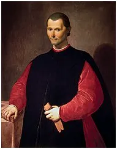

Makiawelizm nasz powszedni od święta.
Jesteśmy tuż po "święcie demokracji", czyli po wyborach i tak się składa, że większość demokratycznej większości jest rozczarowana, i tak co 4 lata już od ponad 100 lat.
Makiawelizm, błędnie opisane w Wikipedii jako "cecha osobowości, polegająca m.in. na braku uczuć wyższych, instrumentalnym traktowaniu innych i chłodnych relacjach interpersonalnych." Wiki zasadniczo w obszarach humanistycznych to wielka mina dla młodych i ludzi bez przygotowania. Makiawelizm to zdolność do racjonalnego poruszania się w sprawach zawodowych, politycznych i innych społecznych, bez emocjonalnych odruchów, z maksymalizacją własnych korzyści. Wprawny polityk, czy biznesmen może prowadzić bardzo etyczne i subtelne życie emocjonalne i duchowe w gronie rodziny, czy przyjaciół, jednak rezygnuje z wszelkich emocjonalnych odruchów w swej profesji.
Jedyną miarą polityki jest skuteczność. Jednym z najlepszych sposobów na doprowadzanie do korzystnych dla siebie cudzych wyborów jest korzystanie z emocjonalnych odruchów strony przeciwnej. W monarchiach grono graczy ograniczało się do kilku rodzin książęcych i rodziny królewskiej oraz kleru. Wszyscy uczestniczący w grze politycznej byli do niej doskonale przygotowani. Obecnie, w demokracji, do tej gry wciągnięto "społeczeństwo" eliminując rodziny książęce i monarchie. Społeczeństwo w swej przytłaczającej większości nie rozumie w jakiego rodzaju grze bierze udział i jest powodowane teatrem "gry politycznej". Paradoksalnie, w obliczu swych emocji i "sympatii" najczęściej głosuje za opcją nakładającej na wyborcach coraz to nowe podatki, w imię "wspólnych wartości", zupełnie obcych klasie rządzącej. Wiadomo to od początku demokracji, czyli od wieków, a szczególnie od początku XX wieku, jednak racjonalizm jest większości ludziom obcy, nie są oni zdolni do przyjęcia faktu, że w sprawach finansowych pewna grupa ludzi jest w pełni cyniczna. Polityka to prawo do bycia monopolistą na określonych rynkach, nic więcej. Jeśli pokojowe rozmowy nie dają rozwiązania wysyła się wojsko i tworzy nowe punkty celne i szlaki handlowe. To wszystko w tej sprawie. Zamieszczam na swoim serwerze klasyczne dzieło w tej kwestii. "Książę" Machiavellego powstał w wieku XVI, ale to tylko renesansowa odsłona wiedzy znanej od zarania świata. Polecam lekturę źródła, to najprostsza droga do wiedzy. W Polsce szczególnie ciekawy jest Rozdział 5. "Jak rządzić miastami lub krajami, które przed podbiciem własne miały ustawy."W komentarzach proszę o pytania. Wkrótce wskażę inne, klasyczne teksty w tej dziedzinie np. starochińskie lub antyczne.
Pełen tekst "Księcia" jest tu: https://pawelklimczewski.pl/2023/11/02/ksiaze/
Proszę linkować do tej strony. Poniżej info jak można mnie wesprzeć w działalności publicystycznej.
Dziękuję ze wsparcie niezależności mediów w Polsce.